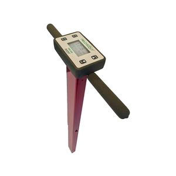
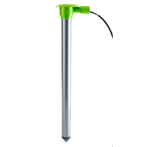
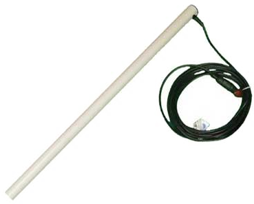
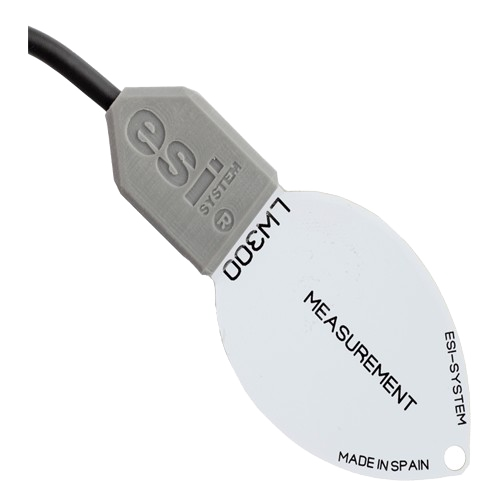

Sonda con 6 sensores

Características:
- Funciones complejas
- Contiene sensor de temperatura, humedad, acelerómetro, envío Wi-Fi, luz y salinidad
- Sistema de protección y antirobo
Descripción:
Este modelo de sonda contiene 6 sensores (temperatura, humedad, salinidad, luz, acelerómetro y envío Wi-Fi) que tienen como principal finalidad recoger y enviar datos a la base de datos para monitorizarlos en forma de gráfica
Si quieres descubrir más en profundidad las caracterñisticas de cada sensor de la sonda, pincha en los menus
Sonda con sensor de temperatura

Características:
- Medición en calor y frío
- Mayor precisión de los valores
- Alta sostenibilidad
Descripción:
Este sensor se encarga de recopilar datos sobre la temperatura ambiente dentro de los invernaderos por tal de controlar que las plantas no sean débiles a causa de menor absorción del agua debido a la calor, o que los tejidos mueran debido a, mediante una congelación en las células, la obstrucción de nutrientes y agua por frío excesivo.
Sonda con sensor de humedad
Características:
- Fácil de usar
- Mayor precisión de los valores
- Alta velocidad de procesamiento
Descripción:
El sensor de humedad se encarga de recopilar información acerca de la humedad del entorno con la finalidad de controlar que les llega la debida cantidad de agua a las plantas para así tener una cosecha excelente que podría verse dañada por sobrehidratación o que se pudran.
Sonda con sensor de salinidad
Características:
- Alta caridad con mayor tiempo de uso
- Ligero, poco peso
Descripción:
Este sensor se encarga de recopilar datos sobre la salinidad ambiente dentro de los invernaderos por tal de controlar que las plantas no sean débiles a causa de menor absorción del agua debido a la calor, o que los tejidos mueran debido a, mediante una congelación en las células, la obstrucción de nutrientes y agua por frío excesivo.
Sonda con sensor de luz
Características:
- Mayor precisión de los valores
- Alta velocidad de procesamiento
- Fácil de usar
Descripción:
El sensor de luz se encarga de controlar que la plantación tenga la debida luminosidad puesto que sin esta, las plantas no podrían hacer correctamente el proceso de la fotosíntesis.
Sonda con sensor de acelerómetro
Características:
- Mayor precisión de los valores
- Alta velocidad de procesamiento
- Sistema antirobo
Descripción:
Sensor que mide la aceleración de la sonda, ya sea estática o dinámica. Las fuerzas estáticas incluyen la gravedad, mientras que las dinámicas son las que se producen por vibraciones o por movimiento. Estas nos permitirán detectar si está granizando, o, en nuestro caso, si alguien está tratando de robar nuestro sensor.
Sonda con sensor Wi-Fi

Características:
- Buena señal de envío
- Alta sostenibilidad
- Mayor rapidez de procesamiento
Descripción:
Este sensor se encarga de enviar todos los datos recogidos por la sonda a la centralita para poder procesarlos.